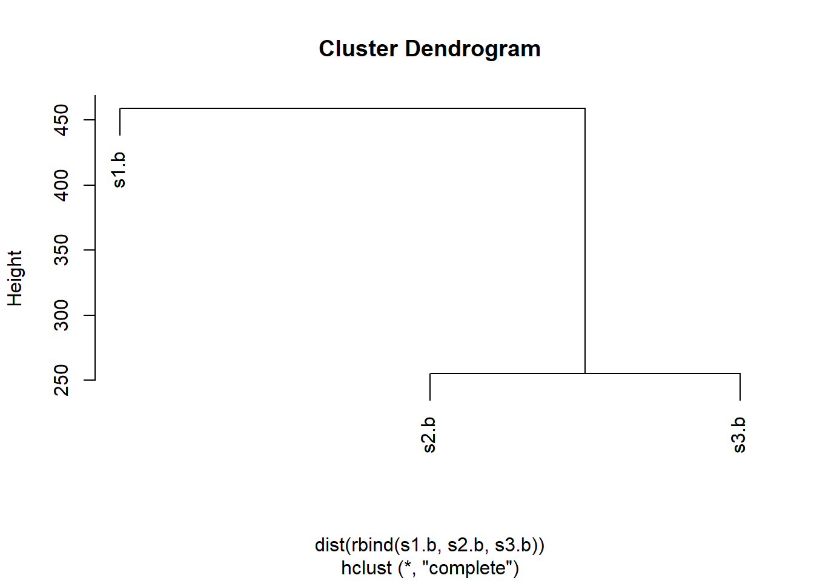

df <- data.frame(a=1:10, b=seq(200,400,length=10),c=11:20,d=NA)
df$a <- (df$a - min(df$a)) / (max(df$a) - min(df$a))
df$b <- (df$b - min(df$a)) / (max(df$b) - min(df$b))
df$c <- (df$c - min(df$c)) / (max(df$c) - min(df$c))
df$d <- (df$d - min(df$d)) / (max(df$a) - min(df$d)) HW6
A. Can you improve this analysis code?
Firstly, we see that there is an error in the line with df$d as an a has not been changed into a d. Thus is important to generalize this process into a function to reduce errors arising from copy and paste. We first simply to work with a generic vector x.
x <- 1:5
x <- (x - min(x)) / (max(x) - min(x))
#since min(x) is repeated, we can simplify by saving it into a variable
xmin <- min(x)
x <- (x - xmin) / (max(x) - xmin)
#noting that the function range() also outputs the minimum and maximum, we can further simplify:
rng = range(x)
x <- (x-rng[1]) / (rng[2] - rng[1])Writing a function to emulate the repeated process
rescale <- function(x){
rng = range(x)
(x-rng[1]) / (rng[2] - rng[1])
}Let’s test on a small example where we know the answer
rescale(1:10) [1] 0.0000000 0.1111111 0.2222222 0.3333333 0.4444444 0.5555556 0.6666667
[8] 0.7777778 0.8888889 1.0000000It seems that the rescale function works on our small test. How about when the example has NAs?
rescale(c(1,2,3, NA, 10))[1] NA NA NA NA NAWhy? Let’s see how range() deals with NA
range(c(1,2,3,NA,10))[1] NA NATurns out range() has an argument na.rm which will be useful
range(c(1,2,3,NA,10), na.rm = T)[1] 1 10Let’s rewrite the rescale function
rescale <- function(x){
rng = range(x, na.rm = T)
(x-rng[1]) / (rng[2] - rng[1])
}and retry on our example with an NA
rescale(c(1,2,3, NA, 10))[1] 0.0000000 0.1111111 0.2222222 NA 1.0000000Great! Note that some potential problems with this code though are that if there are strings in the vector the function won’t know how to deal with those
#rescale(c(1,2,3, "cat"))
#returns "Error in x - rng[1] : non-numeric argument to binary operator"B. Can you improve this analysis code?
First fix the error in s3.chainA
library(bio3d) Warning: package 'bio3d' was built under R version 4.0.5s1 <- read.pdb("4AKE") # kinase with drug Note: Accessing on-line PDB files2 <- read.pdb("1AKE") # kinase no drug Note: Accessing on-line PDB file
PDB has ALT records, taking A only, rm.alt=TRUEs3 <- read.pdb("1E4Y") # kinase with drug Note: Accessing on-line PDB files1.chainA <- trim.pdb(s1, chain="A", elety="CA")
s2.chainA <- trim.pdb(s2, chain="A", elety="CA")
s3.chainA <- trim.pdb(s3, chain="A", elety="CA")
s1.b <- s1.chainA$atom$b
s2.b <- s2.chainA$atom$b
s3.b <- s3.chainA$atom$b
plotb3(s1.b, sse=s1.chainA, typ="l", ylab="Bfactor") 
plotb3(s2.b, sse=s2.chainA, typ="l", ylab="Bfactor") 
plotb3(s3.b, sse=s3.chainA, typ="l", ylab="Bfactor")
SHORT QUESTIONS
Q1 The object returned from the read.pdb() function is a Protein Data Bank (PDB) coordinate file.
Q2 The function trim.pdb() produces a smaller PDB object by subsetting certain atoms from a larger PDB object, for example by specifying a chain of a protein
Q3 Setting the input parameter “sse” to NULL would remove the black and grey rectangles in the plots. These rectangles represent the secondary structure of the protein
Q4 A better plot to compare across the different proteins might be to overlay these scatter plots over one another
Q5
hc <- hclust( dist( rbind(s1.b, s2.b, s3.b) ) )
plot(hc)
One might compare/quantify the similarity of the proteins based on heirarchal clustering. With some metric of distance, the b-factor at each position/residue on the protein is compared, where proteins more similar will score lower distance scores, and vice versa. Hierarchal clustering will group similar proteins (based on distance) together and form a sort of tree showing the comparative distances between such proteins. Based on the hierarchal clustering of the b-factor trends of the three proteins, we see that s2.b and s3.b are the most structurally similar.
Q6
#It seems that the purpose of this code/analysis chunk is
#to plot the b-factor scores of a protein along with annotations of the secondary structure
#This function will take in a protein with identifier PID.
#It will first access the PDB file of this protein using the read.pdb() function
#then it will then trim it using trim.pdb in accordance with the specifications of the
#protein chain and the atom type.
#Lastly it will plot, using plotb3, a scatterplot of the b-score along the protein chain
#with annotations of the secondary structure specified by the trimmed object.
#The output of this function is this plot.
#The input of the function are the unique identifier of the protein, PID
#the chain specified,which by default is set to "A",
#and the atom name "elety" which by default is set to "CA"
plotb3_new <- function(PID, chain = "A", elety = "CA"){
#this loads the PDB coordinate file of the protein specified by PID into protein
protein <- read.pdb(PID)
#variable protein is trimmed according to the chain and atom type, by default "A" and "CA"
protein.chain <- trim.pdb(protein, chain = chain, elety = elety)
#the b-factor score of the protein chain is plotted alongside the sse protein.chain
plotb3(protein.chain$atom$b, sse = protein.chain, typ = "l", ylab = "Bfactor")
}Let’s try with our known protein samples to compare our results
plotb3_new("4AKE") # kinase with drug Note: Accessing on-line PDB fileWarning in get.pdb(file, path = tempdir(), verbose = FALSE): C:
\Users\Joshua\AppData\Local\Temp\Rtmp8M8UcM/4AKE.pdb exists. Skipping download
plotb3_new("1AKE") # kinase no drug Note: Accessing on-line PDB fileWarning in get.pdb(file, path = tempdir(), verbose = FALSE): C:
\Users\Joshua\AppData\Local\Temp\Rtmp8M8UcM/1AKE.pdb exists. Skipping download PDB has ALT records, taking A only, rm.alt=TRUE
plotb3_new("1E4Y") # kinase with drug Note: Accessing on-line PDB fileWarning in get.pdb(file, path = tempdir(), verbose = FALSE): C:
\Users\Joshua\AppData\Local\Temp\Rtmp8M8UcM/1E4Y.pdb exists. Skipping download
Looks like everything matches up with the results of the original analysis!